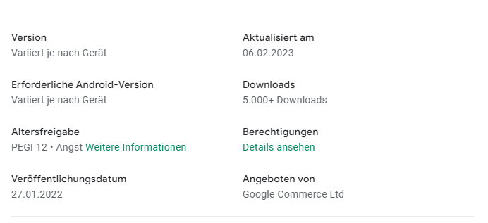

Hallo,
obwohl ich in den Einstellungen der Magenta TV App am Apple TV die Untertitel deaktiviert habe, werden diese bei jedem RePlay einer Sendung automatisch aktiviert (German captured). Als derzeitige Abhilfe muss dann bei jedem Re-Play manuell der Untertitel im Menü zur laufenden Sendung erneut deaktiviert werden. Es scheint, dass die globale Deaktivierung für RePlay Funktion nicht herangezogen wird.
Gibt es hierzu eine Abhilfe, oder braucht es einen Bugfix der App?
Hallo @BeKat ,
welche Magenta TV App Version hast du installiert?
Kann jemand anderer in der Community diesen Bug bestätigen?
LG JD.
Hallo Jonathan
ich habe die Version
2.0.730-Veröffentlicht 28. Dez. 2022
T-Mobile Austria GmbH
installiert auf dem AppleTV
tvOS 16.2 (20K362)
falls du noch weitere Infos brauchst bitte gib Bescheid.
danke!
Hallo @BeKat , bitte aktualisiere einmal die Magenta TV App auf die aktuelle Version (2.0.740 // 10.01.2023) und schick uns dann ein Foto, auf dem zu sehen ist, dass bei den Einstellungen die Untertitel deaktiviert sind. Danke + LG Doris
Hallo Doris, leider steht dieses Update für tvOS wohl noch nicht zur Verfügung. Auch ein Update auf tvOS 16.3 hat keine Auswirkung. Die MagentaTV App kann ich nicht aktualisieren. Ich habe auch versucht die App am Gerät zu löschen und neu zu installieren. Es ist aber weiterhin die Version 2.0.730?
Gibt es schon eine Freigabe der neuen Version für tvOS? Am iPhone habe ich schon die neue Version 2.0.740. Lg
Bearbeitet von BeKatHallo @Doris676 , gibt es schon einen Plan, wann die 2.0.740 Version auf tvOS ausgerollt werden soll?
lg Bernhard
Hallo @BeKat , das Release für das Update war der 17.01.2023. Wenn du die aktuelle Version 2.0.740 weiterhin nicht sehen solltest, deinstalliere die Magenta TV App einmal und lade sie erneut herunter. LG Doris
Hallo @Doris676
leider ist auch im AppStore im tvOS nur die alte Version verfügbar. Im AppStore vom Tablet auch die neue Version - siehe Foto Lg
Hallo,
laut App-Store kann die Version variieren:

Hast du schon bei den Einstellungen nachgesehen, ob du da die Untertitel ausschalten kannst?
LG JD.
Hallo Zusammen, Hallo @Jonathan Dorian
wie oben bereits geschrieben habe ich in den Einstellungen die Untertitel ausgeschaltet. Das hilft leider nicht. Trotzdem werden bei jeder Sendung die Untertitel angezeigt.
Hallo @Doris676 , konntest du bzgl App Version was rausfinden? Wie es scheint, wurde die neuere Version für das tvOS noch nicht released?
Danke und lg
Hallo liebe Community, mittlerweile wurde die AppVersion auf die neueste Version v2.0.760 aktualisiert. Das Problem mit den Untertitel besteht aber weiterhin. Dies jedoch nicht nur bei re-play von Sendungen, sondern auch im Live-TV. Es scheint noch immer so zu sein, dass die allgemeinen Einstellungen „Spracheinstellungen - Untertitel - kein Untertitel“ keinen Einfluss haben. Bei jedem Programm, dass ich anwähle, werden Untertitel angezeigt und ich muss derzeit die Untertitel jedesmal im Programm selbst über die Spracheinstellung deaktivieren.
Bitte um Hilfe, denn dies ist sehr störend…
Bearbeitet von BeKatJa, kann ich bestätigen, ist bei mir genau so.
Hi, wir geben eure Meldung weiter.
Habt ihr das Thema auch schon direkt beim Technikteam unter 0676 200 7777 deponiert bzw. dort Feedback abgegeben? LG Karo
Nice try… ich habe es heute versucht dem „Technikteam“ zu erklären. Der 1st Level Support kam zuerst mal nur schwer mit meiner Problematik zurande, aber dann haben wir es gemeinsam doch geschafft.
Schuld ist gar nicht die Magenta App sondern die Einstellungen von der Apple TV Box. Dort gibt es in den Einstellungen im Untermenü „Audio und Video“ die Option „Automatische Untertitel“. Diese muss deaktiviert werden, denn diese Option overruled die Einstellung der Magenta TV App ;-). Gut zu wissen würde ich sagen…
{kind=link}
{kind=link}
{kind=link}
{kind=link}